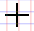
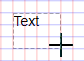
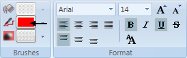
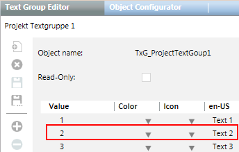
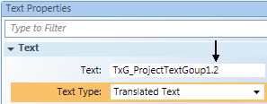

Adding Text to the Graphics Page
- Click Text
 .
. - Move the cursor to the corresponding position on the graphics page. The cursor changes to

. - Left-click and drag the cursor to the desired size

. - Release the left mouse button.
- The text field size is defined.
- Enter project-specific text:
- In the Text field
or - Select Text Properties > Text > Text.
- Format the text as needed

.

NOTE:
Text entered manually cannot be translated for multilingual projects.
Adding Multilingual Texts
- A multilingual Desigo CC installation and project is available.
- The text group is created with texts specific to the project and translated into the applicable languages.
- Click Text.
- Move the cursor to the corresponding position on the graphics page. The cursor changes to .
- Left-click and drag the cursor to the desired size .
- Release the left mouse button.
- The text field size is defined.
- Select Text Properties > Text > Text Type and the Translated Text option.
- In System Browser, select Management View.
- Select Project > System Settings > Libraries >
- To use project-specific texts, select Project > Common > Texts.
- To use standardized texts, select BA (HQ) or Global.
- Select the text group (with the corresponding text content) and drag it to the dialog Text Properties > Text > Text.
- The object reference is added to the Text field, for example, TxG_ProjectTextGroup.2.
NOTE:
- The prefix TxG_ is added to each reference to a text group.
- The suffix (for example, .2) refers to the second value entry from the selected text group table (see Table Suffix for Text from the Text Group). - On the graphics page, double-click Text and select the Project-specific text from the displayed list.
- Format the text as needed .
- The text is added to the graphic and is displayed in Online mode as per the language in the user profile.
Suffix for Text from the Text Group | |
Text Group | Text Properties |
 |  |
Creating a Project-Specific Text Group for Multiple Languages
For multilingual projects, you must create an entry in a project-specific text group for each graphic. Create a unique project-specific text group for each discipline and/or building structure. You should limit the entries per text group to 20 to maintain an overview.
- A multilingual Desigo CC installation and project is available.
- In System Browser, select Management View.
- Select Project > System Settings > Libraries > Project > General >Texts.
- An empty text group is created.
- Enter the data in the first row:
- Value = 1
- En-US (default language) = Enter text 1 for en-US or leave blank.
- Language 2: Enter text 2 for language 2
- Language 3: Enter text 3 for language 3
- Click Save
 .
. - Enter the data for the new text group:
- Object name: The object name is used for referencing. Special characters and spaces are not permitted.
- Name: Text group name in System Browser. Special characters and spaces are not permitted.
- Description: Descriptive name for the text group in System Browser.
- Click OK.
- Click
 to create additional project-specific entries.
to create additional project-specific entries. - Click Save .
- The project-specific texts are created and translated.
NOTE:
For graphic text referencing, the suffix TxG_ precedes the object name (for example, TxG_ProjectTextGroup.2).